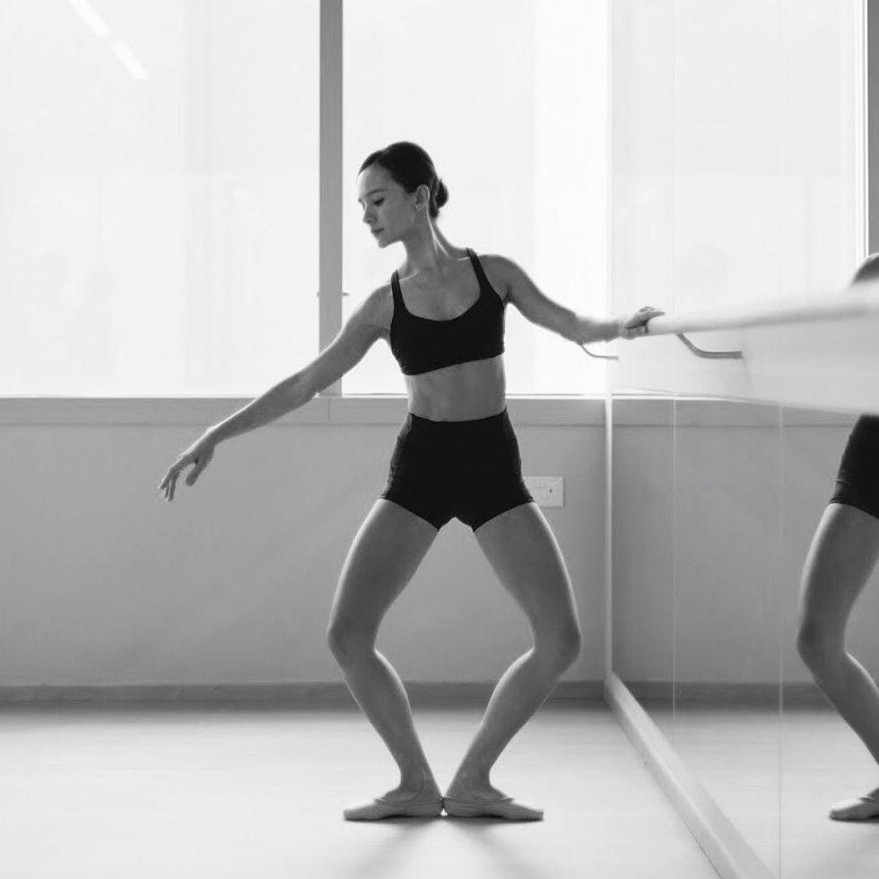
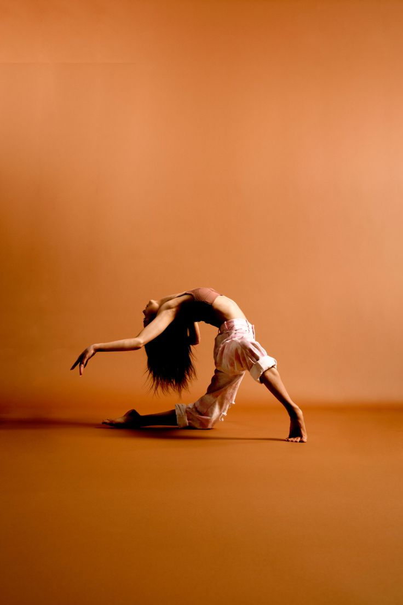
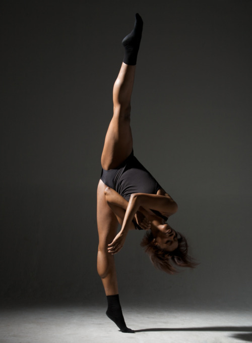
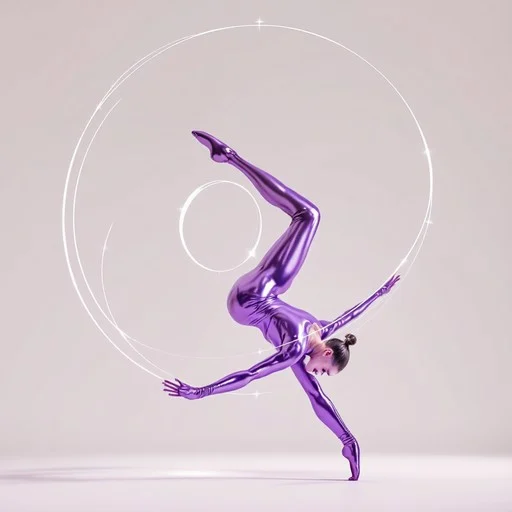

Plie
A fundamental position where the dancer bends their knees while keeping their feet flat on the ground.

Lunge
A deep bend in one knee while the other leg is extended behind or to the side.

Contraction
A movement where the body contracts inward, typically focusing on the torso.

Tilt
A pose where the torso tilts sideways, often with one arm raised to accentuate the line

Arch
A backward bend of the torso, often initiated from the spine or pelvis.

Spiral
A twisting movement of the torso, where the spine rotates in a circular motion.